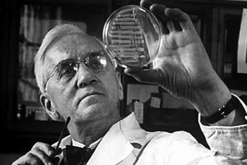
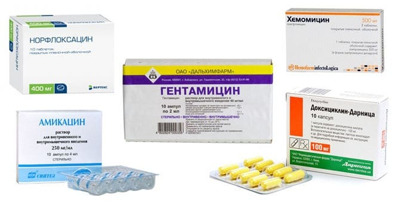
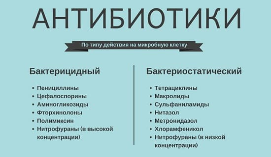
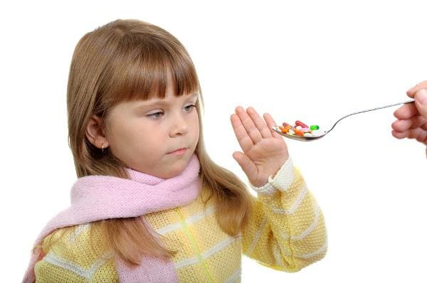

Сам термин «антибиотик» в дословном переводе выглядит весьма зловеще: «анти» – против, «био» – жизнь. Противник жизни, короче говоря. Но, к счастью, речь идет не о жизни вообще, а о жизни микроорганизмов в частности.
В 1928 г. был открыт пенициллин. Обратите внимание, не придуман, не изобретен, а именно открыт. Ведь все дело в том, что антибиотики существовали и существуют в живой природе столько времени, сколько существует сама природа. Определенные микроорганизмы способны вырабатывать вещества, защищающие их от повреждающего действия других микроорганизмов. Вот эти вещества и являются по своей сути антибиотиками.
Его лаборатория была маленькой и темной. Он никогда не закрывал в нее дверь – типичный проходной двор. Его звали Александр Флеминг. Потом он стал нобелевским лауреатом и сэром Александром Флемингом.
Именно склонность Флеминга к «рабочему беспорядку» привела к открытию, которое вскоре потрясло мир.
Флеминг был бактериологом. Как изучают бактерий? Берут некую среду, в которой предполагается наличие бактерий (этой средой может быть что угодно – почва, вода, еда, кровь и т. д.), и помещают на особую плоскую чашку с питательными веществами, где предполагаемые бактерии должны размножаться. Бактерии растут и на чашке образуются хорошо видные точки разных размеров – колонии микробов. Колонии наносят на особые стеклышки, красят особыми красителями, затем изучают под микроскопом.
Множество чашек, свое отслуживших, скапливается в лаборатории. Одна из них оказалась зараженной плесенью. Флеминг «всего-навсего» обратил внимание на то, что колонии бактерий (это были стафилококки) вокруг плесени растворились – т. е. бактерии погибли. Вывод ученого о том, что плесень вырабатывает некое вещество, способное уничтожать микробы, и привел к открытию пенициллина.
В случае с открытием пенициллина таким «производителем» антибиотика оказался особый вид плесени. Осталось «совсем немного» – позаимствовать у плесени лишь ей присущее оружие, придумать, как это оружие создавать в количествах, адекватных потребностям человечества, и научиться этим оружием пользоваться.
С 1943 г. началось промышленное производство пенициллина. И с этого времени антибиотики стали обязательным компонентом современной медицины.
Ведь как, на первый взгляд, просто и логично выглядит использование этих средств. Есть некий микроб, вызывающий болезнь. Есть лекарство, способное уничтожить микроб, вызывающий болезнь. Назначаем лекарство, уничтожаем микроб, исчезает болезнь. Очень все просто и здорово получается.
Но чем больше назначаем и чем больше уничтожаем, тем большее количество проблем появляется… Ибо антибиотики – оружие очень серьезное. А пользоваться серьезным оружием надобно умеючи.

Отсюда, казалось бы, вполне закономерный и вполне логичный вывод – применять антибиотики может только специалист, должным образом этому делу обученный, короче говоря, врач. На практике, тем не менее, это происходит не всегда так.
Принципиальная возможность бороться с инфекциями людям так понравилась, что человека, ни разу не пытавшегося какого-нибудь микроба «задавить» в себе самостоятельно, встретить почти невозможно. Любой антибиотик в любой аптеке вам продадут без всякого рецепта. В последнее время, правда, число любителей лечиться самостоятельно медленно уменьшается в связи с общим снижением платежеспособности населения, но на детей денег не жалеют, а на врачей обижаются, если те ничего серьезного не назначают.
Автор вовсе не ставит своей целью научить читателей пользоваться антибиотиками! Задача видится в том, чтобы:
• еще раз подчеркнуть сложность и небезопасность антибиотикотерапии;
• обратить внимание на очевидное: и сам факт назначения, и доза, и сроки использования, и непосредственный выбор антибиотика требуют высочайшего профессионализма – определенных и немалых знаний, опыта, интуиции, здравого смысла;
• объяснить значение некоторых особо мудрых медицинских слов, непременно сопровождающих процесс лечения антибиотиками;
• перечислить и настоять на обязательном выполнении правил применения антибиотиков. Правил, актуальных именно для того, кто антибиотиками лечится (знание этих правил тем, кто антибиотиками лечит, подразумевается).
Антибиотики – вовсе не единственное средство, способное уничтожать в организме болезнетворные микроорганизмы.
Принципиальная возможность использования любых антимикробных препаратов основана на том, что в определенной бактериальной клетке есть определенные структуры, которые не имеют аналогов в организме человека. Проще говоря, необходимо найти в микроорганизме нечто такое (белок, фермент), без чего он существовать не может, но это «нечто» должно быть свойственно именно микробу – т. е. в человеке таких ферментов или таких белков быть не должно.
Пример: клеточная оболочка некоторых бактерий по своей анатомии не имеет ничего общего с любыми клетками любого млекопитающего. Естественно, что вполне возможно (хотя совсем непросто) создание вещества, разрушающего оболочку бактерии, но не повреждающего при этом клетки человеческого организма. Кстати, именно так, разрушая оболочку бактерии, действуют знаменитые пенициллин, ампициллин, цефалексин.
Еще пример: почти у всех бактерий имеется фермент, который носит сложное название «ДНК-гираза». Без него бактерии теряют способность размножаться и быстро погибают. Созданы препараты, разрушающие ДНК-гиразу и, разумеется, обладающие выраженным антибактериальным действием на очень многие бактерии – норфлоксацин, офлоксацин и т. п.
Но перечисленные препараты, не являются антибиотиками!
Такое положение вещей не слишком понятно и требует объяснения.
Еще раз подчеркиваю: антибиотики – это вещества, которые одни микроорганизмы вырабатывают для уничтожения других микроорганизмов.
Некоторые грибы (пеницилиум, цефалоспориум и т. д.) производят антибиотики – например, пенициллин, цефалоспорин. Некоторые бактерии (актиномицеты) производят антибиотики – например, тетрациклин, стрептомицин.
Любой естественный антибиотик ученые пытаются модернизировать (изменить, улучшить, сделать более активным против микробов и менее опасным для человека). Так, путем изменения структуры пенициллина получены его синтетические производные – оксациллин, ампициллин; путем изменения тетрациклина – доксициклин, метациклин, и т. д. Таким образом, антибиотики бывают естественными и синтетическими.
В то же время антимикробное средство может не иметь ничего общего с живой природой – оно может быть продуктом исключительно человеческого разума, т. е. быть веществом, которое человек придумал сам. О многих таких препаратах вы, конечно же, слышали. Это знаменитые сульфаниламиды (стрептоцид, этазол, бисептол), нитрофураны (фуразолидон, фурагин), фторхинолоны (уже названные нами норфлоксацин, офлоксацин и т. п.).

Смысл вышеизложенного: антибактериальные средства и антибиотики – это не одно и то же.
Есть в медицине такой термин – «химиотерапия». Химиотерапия – это лечение инфекционных заболеваний лекарственными препаратами. И все перечисленные нами лекарственные препараты – и сульфаниламиды, и антибиотики, и фторхинолоны, и нитрофураны – представляют собой химиотерапевтические средства, или, что более понятно, антимикробные средства.
Приведенная информация имеет больше теоретическое, чем практическое значение, поскольку принципы и правила применения любых антимикробных средств одинаковы. Все, что мы расскажем про антибиотики, в равной мере будет распространяться и на почитателей бисептола и на поклонников фуразолидона, и на всех остальных любителей побороться с микробами.
Антибиотики бывают разными, и это вполне очевидно. Но, применяя в каждом конкретном случае совершенно определенный антибиотик, врачи (еще раз повторяю, именно врачи) исходят из совершенно определенных свойств конкретного препарата. Что же это за свойства?
Каждый антибиотик действует на строго определенные микроорганизмы. Так, например, пенициллин активно действует на так называемые кокки – стрептококк, менингококк, гонококк, пневмококк, но не действует на кишечную палочку, дизентерийную палочку, сальмонеллу. Антибиотик полимиксин, наоборот, действует на палочки, но не действует на кокки. Левомицетин и ампициллин действуют и на первых, и на вторых. Т. е. спектр действия левомицетина шире, чем спектр действия пенициллина. Отсюда очевидные понятия «антибиотик широкого спектра действия» и «антибиотик узкого спектра действия».
Хорошо это или плохо – антибиотик широкого спектра действия? С одной стороны, очень хорошо, поскольку если возбудитель болезни не известен (ну просто не ясно, кто вызывал конкретный менингит, или конкретное воспаление легких), использование антибиотика широкого спектра с большей вероятностью окажется эффективным. С другой стороны, такой антибиотик будет уничтожать не только возбудителя болезни, но и «мирных» кишечных микробов, что проявится в виде дисбактериоза. Отсюда очевидный вывод – антибиотики узкого спектра (пенициллин, оксациллин, эритромицин), более предпочтительны, чем антибиотики широкого спектра (ампициллин, гентамицин, тетрациклин, левомицетин). Но лечить именно препаратами узкого спектра врачу сложнее – легче не угадать, не попасть, не помочь и оказаться, в конце концов, виноватым.
Одни антибиотики полностью подавляют рост бактерий, т. е. разрушают их необратимо. Такие антибиотики называются бактерицидными, они действуют на очень важные клеточные структуры, уничтожая микробов быстро и в огромных количествах. Пенициллин разрушает оболочку бактерии, и шансов на существование у последней не остается. Понятно, что пенициллин – бактерицидный антибиотик, как, впрочем, и ампициллин, цефалексин, гентамицин.
Некоторые антибиотики действуют совершенно иначе – они препятствуют размножению бактерий. Колония микроорганизмов не увеличивается, бактерии, с одной стороны, погибают сами по себе («от старости»), с другой – активно уничтожаются клетками иммунитета (лейкоцитами) и человек быстро выздоравливает. Такие антибиотики – они называются бактериостатическими – как бы помогают организму самому побороть инфекцию. Примеры – эритромицин, тетрациклин, левомицетин.

Если рано прекратить прием бактериостатического антибиотика – болезнь обязательно вернется. Эффект от бактерицидного препарата наступит быстрее.
Каким бы путем ни попал антибиотик в организм, он, в конце концов, оказывается в крови и разносится по всему телу. При этом в определенном органе определенный антибиотик накапливается в совершенно определенном количестве.
Отит можно лечить и пенициллином и ампициллином, но ампициллин в полости среднего уха накапливается лучше, следовательно, будет более эффективным. Антибиотик линкомицин хорошо проникает в кости и его используют для лечения остеомиелита (гнойного воспаления костей). Проглоченный антибиотик полимиксин вообще не всасывается в кровь и действует только в кишечнике – удобно для лечения кишечных инфекций.
Распределение в организме некоторых современных препаратов вообще уникально. Так, например, антибиотик азитромицин особым образом прикрепляется к фагоцитам – иммунным клеткам, которые поглощают и переваривают бактерии. При возникновении в организме очага воспаления фагоциты двигаются именно туда и накапливаются в огромном количестве в воспалительном очаге. Азитромицин движется вместе с фагоцитами – т. е. при наличии пневмонии максимальное количество антибиотика будет именно в легких, а при пиелонефрите – именно в почках.
«Направить» антибиотик в места скопления микробов можно по-разному. Можно намазать мазью с антибиотиком гнойник на коже. Можно проглотить (таблетки, капли, капсулы, сиропы). Можно уколоть – в мышцу, в вену, в спинномозговой канал.
Путь введения антибиотика не имеет принципиального значения – важно лишь, чтобы антибиотик вовремя оказался в нужном месте и в нужном количестве. Это, так сказать, стратегическая цель. Но вопрос тактический – как этого добиться – не менее важен.
Очевидно, что любые таблетки явно удобнее уколов. Но… Некоторые антибиотики в желудке разрушаются, например пенициллин. Другие не всасываются или почти не всасываются из кишечника, например гентамицин. У больного может быть рвота, он вообще может быть без сознания. Эффект от лекарства проглоченного наступит позже, чем от того же лекарства, введенного внутривенно, – понятно, что чем тяжелее болезнь, тем больше оснований для неприятных уколов.

Одни антибиотики – например пенициллин или гентамицин – в неизмененном виде выводятся из организма с мочой. Это позволяет, с одной стороны, успешно лечить болезни почек и мочевыводящих путей, но с другой – при существенном нарушении работы почек, при уменьшении количества мочи может привести к избыточному накоплению антибиотика в организме (передозировке).
Другие препараты, например тетрациклин или рифампицин, выводятся не только с мочой, но и с желчью. Опять-таки – очевидна эффективность при болезнях печени и желчевыводящих путей, но нужна особая осторожность при печеночной недостаточности.
Лекарств без побочных явлений не существует. Антибиотики – не исключение, и это мягко говоря.
Возможны аллергические реакции. Одни препараты вызывают аллергию часто, например пенициллин или цефалексин, другие – редко, например эритромицин или гентамицин.
Определенные антибиотики оказывают повреждающее (токсическое) действие на некоторые органы. Гентамицин – на почки и слуховой нерв, тетрациклин – на печень, полимиксин – на нервную систему, левомицетин – на систему кроветворения и т. д. После приема эритромицина часто возникают тошнота и рвота, большие дозы левомицетина вызывают галлюцинации и снижение остроты зрения, любые антибиотики широкого спектра действия способствуют развитию дисбактериоза…
А теперь давайте задумаемся!
С одной стороны, очевидно следующее: прием любого антимикробного средства требует обязательного знания всего, что было выше перечислено. Т. е. все плюсы и все минусы должны быть хорошо известны, в противном случае – последствия лечения могут быть самыми непредсказуемыми.
Но с другой стороны – самостоятельно глотая бисептол, или, по совету соседки, засовывая в ребенка таблетку ампициллина, вы отдавали отчет своим действиям? Вы все это знали?
Конечно же, не знали. Не знали, не задумывались, не подозревали, хотели, как лучше…
Лучше – знать и задумываться…
Что необходимо знать
Любое антимикробное средство должно назначаться только врачом!
• Недопустимо применение антибактериальных препаратов при вирусных инфекциях якобы с целью профилактики – дабы упредить развитие осложнений. Это никогда не удается, наоборот – становится только хуже. Во-первых, потому, что всегда найдется микроб, который уцелеет. Во-вторых, потому, что, уничтожая одни бактерии, мы создаем условия для размножения других, увеличивая, а не уменьшая при этом вероятность все тех же осложнений. Короче говоря, антибиотик должен назначаться тогда, когда бактериальная инфекция уже есть, а не для того, чтобы якобы ее предотвратить. Наиболее правильное отношение к профилактической антибиотикотерапии заложено в лозунге, выдвинутом гениальным философом М. М. Жванецким: «Неприятности надо переживать по мере их поступления!»
Профилактическая антибиотикотерапия – не всегда зло. После многих операций, особенно на органах брюшной полости, она жизненно необходима. Во время эпидемии чумы массовый прием тетрациклина способен защитить от заражения. Важно только не путать такие понятия, как профилактическая антибиотикотерапия вообще и профилактическое использование антибиотиков при вирусных инфекциях в частности.
Если уж вы антибиотики даете (принимаете), ни в коем случае не прекращайте лечение сразу же после того, как станет чуточку полегче. Необходимую продолжительность лечения может определить только врач.
• Никогда не выпрашивайте чего-нибудь посильнее.
Понятие о силе и слабости антибиотика во многом условно. Для среднего нашего соотечественника сила антибиотика во многом связана с его способностью опустошать карманы и кошельки. Людям очень хочется верить в тот факт, что если, например, тиенам в 1000 раз дороже, чем пенициллин, то он и в тысячу раз более эффективен. Да не тут-то было…
В антибиотикотерапии существует такое понятие, как «антибиотик выбора». Т. е. для каждой инфекции, для каждой конкретной бактерии рекомендуется антибиотик, который следует использовать в первую очередь, – он и называется антибиотиком выбора. Если это невозможно – например аллергия, – рекомендуются антибиотики второй очереди и т. д. Ангина – пенициллин, отит – амоксициллин, брюшной тиф – левомицетин, коклюш – эритромицин, чума – тетрациклин и т. д.
Все очень дорогие препараты используются лишь в очень серьезных и, к счастью, не очень частых ситуациях, когда конкретная болезнь вызвана микробом, устойчивым к действию большинства антибиотиков, когда имеет место выраженное снижение иммунитета.
• Назначая любой антибиотик, врач не может предугадать все возможные последствия. Имеются случаи индивидуальной непереносимости конкретным человеком конкретного препарата. Если это произошло, и после приема одной таблетки эритромицина ребенок всю ночь рвал и жаловался на боли в животе, то врач в этом не виноват. Лечить воспаление легких можно сотней различных препаратов. И чем реже антибиотик используется, чем шире спектр его действия и, соответственно, выше цена, тем больше вероятность того, что поможет. Но тем больше вероятность токсических реакций, дисбактериозов, угнетения иммунитета. Уколы с большей вероятностью и быстрее приведут к выздоровлению. Но больно, но возможны нагноения в том месте, куда укололи. А если аллергия – после таблетки промыли желудок, а после укола – что промывать? Родственники больного и врач в обязательном порядке должны находить общий язык. Используя антибиотики, врач всегда имеет возможность перестраховаться – уколы вместо таблеток, 6 раз в сутки вместо 4, цефалексин вместо пенициллина, 10 дней вместо 7… Но золотая середина, соответствие риска неудачи и вероятности быстрого выздоровления во многом определяется поведением больного и его родственников. Кто виноват, если антибиотик не помог? Неужели только врач? Это что ж за организм такой, который даже с помощью сильнейших лекарств не может справиться с инфекцией! Это ж какой образ жизни надо было организовать, чтобы довести иммунитет до крайности… И я вовсе не хочу сказать, что все врачи ангелы – их ошибки, к сожалению, не редкость. Но смещать акценты необходимо, ибо для конкретного больного ничего не дает ответ на вопрос «кто виноват?». Вопрос «что делать?» – всегда актуальнее. Но сплошь и рядом:
– «Надо было уколы назначать!»;
– «Вы что, кроме пенициллина другого лекарства не знаете?»;
– «Что значит дорого, нам для Машеньки ничего не жалко!»;
– «А вы, доктор, гарантируете, что это поможет?»;
– «Третий раз меняете антибиотик, а все не можете обыкновенную ангину вылечить!».
У мальчика Саши бронхит. Врач назначил ампициллин, прошло 5 дней, и стало значительно лучше. Через 2 месяца очередная болезнь, все симптомы точно такие же – опять бронхит. Имеется личный опыт: ампициллин при этой болезни помогает. Не будем беспокоить педиатра. Будем глотать проверенный и эффективный ампициллин. Описанная ситуация весьма типична. Но ее последствия непредсказуемы. Дело в том, что любой антибиотик способен соединяться с белками сыворотки крови и при определенных обстоятельствах становиться антигеном – т. е. вызывать выработку антител. После приема ампициллина (или любого другого препарата) в крови могут находиться антитела к ампициллину. В таком случае высока вероятность развития аллергических реакций, иногда очень (!) тяжелых. При этом аллергия возможна не только на ампициллин, но и на любой другой антибиотик, похожий по своей химической структуре (оксациллин, пенициллин, цефалоспорин). Любое повторное использование антибиотика многократно увеличивает риск аллергических реакций. Существует и еще один немаловажный аспект. Если одна и та же болезнь повторяется через непродолжительное время, то вполне логично предположить, что при своем повторном возникновении она (болезнь) связана уже с теми микробами, которые «уцелели» после первого курса антибиотикотерапии, а следовательно, применявшийся антибиотик не будет эффективен.

• Следствие предыдущего пункта. Врач не может правильно подобрать антибиотик, если он не владеет информацией о том, когда, по поводу чего, какие препараты и в каких дозах получал ваш ребенок. Этой информацией родители должны обязательно владеть! Записывать! Особенно обращать внимание на любые проявления аллергии.
• Не пытайтесь корректировать дозы препарата. Антибиотики в малых дозах очень опасны, поскольку высока вероятность появления устойчивых бактерий. И если вам кажется, что «2 таблетки 4 раза в день» это много, а «1 таблетка 3 раза в день» – в самый раз, то вполне возможно, что скоро понадобится 1 укол 4 раза в день.
• Не расставайтесь с врачом до тех пор, пока точно не уясните правила приема конкретного препарата. Эритромицин, оксациллин, левомицетин – до еды, прием ампициллина и цефалексина – когда угодно, тетрациклин нельзя с молоком… Доксициклин – 1 раз в сутки, бисептол – 2 раза в сутки, тетрациклин – 3 раза в сутки, цефалексин – 4 раза в сутки…
Еще раз о самом главном.
Миллионы людей обязаны антибиотикам жизнью и здоровьем. Но:
между антибиотиком и человеком в обязательном порядке должно находиться важнейшее промежуточное звено – ВРАЧ, который лечит человека антибиотиком.
Е.О.Комаровский. "Здоровье ребенка"